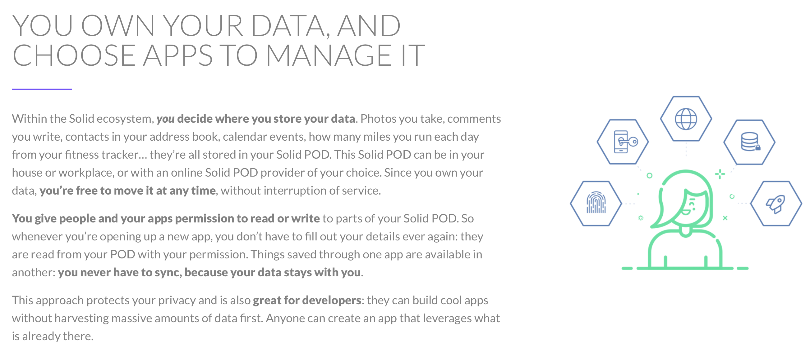
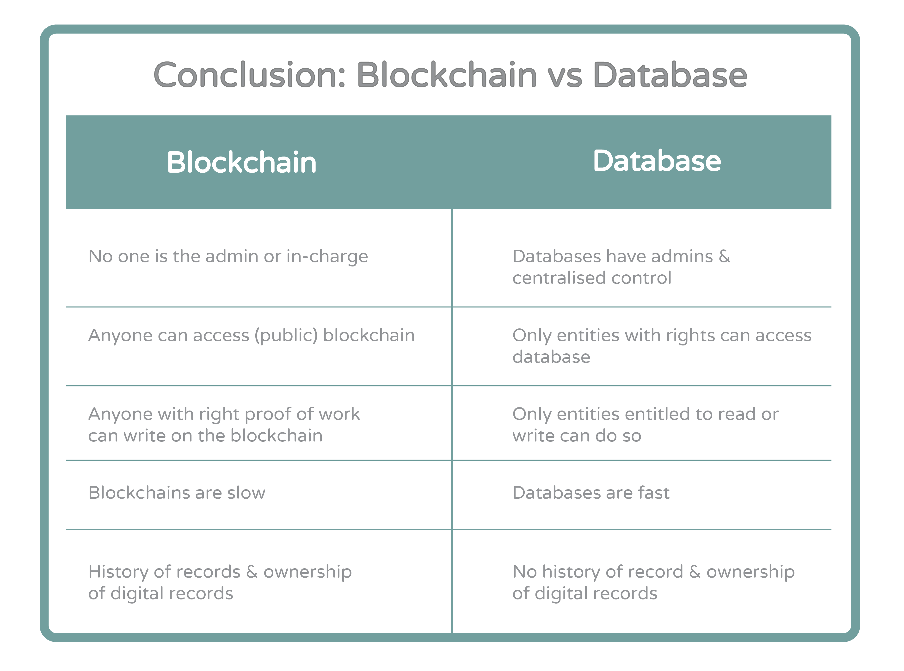
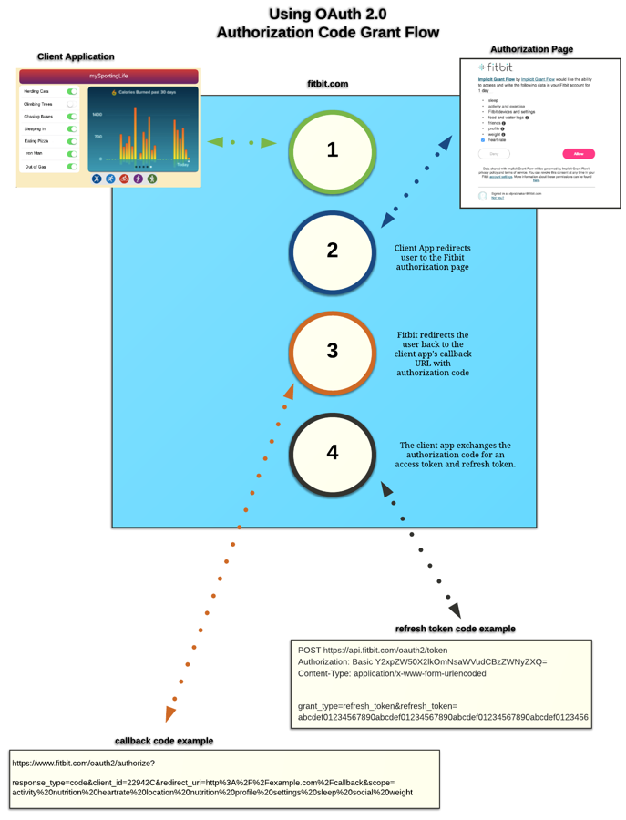

RESEARCH
1. Improving the current data storage system (MongoDB) from centralised to decentralised
This proved to be the most challenging requirement we were faced with due to the fact that there hasn't been yet a fully functional system developed that could store the health data in the FHiR Format decentrally. Such that in addition to storing the data for our project, there needs to be an API that could grab this data from the storage system so that it can be represented as visualisations. Throughout our research we only manage to find research papers but there wasnt any implementations!At first, we thought we were going to use blockchain for this project as suggested by our client, but after a lot of research we found an alternate solution to blockchain which is Solid Inrupt.

[9]
How is a blockchain database different from a regular database?
- “If confidentiality is the only goal, and trust is not an issue, blockchain databases pose no advantage over a centralized database” [1]
- “A blockchain is a distributed ledger that can be used between parties that don’t trust each other with data” [2]
- 
-
-
a. Traditional Databases: [3]
- Client-Server Network architectures
- User modifies data
- Data is stored on one server
- Control of database only managed by a single entity Database allows create, read, update and delete operations
b. Blockchain Databases: [4]
- Several decentralized nodes
- All nodes verify additions to the database
- Append only
- Once entries are made, they can’t be altered or delete
In conclusion, although a blockchain database would be useful in some applications, in the case of FHIR FLI version 2.0 it won’t be useful or needed due to the reasons stated above. For instance, it is mainly used when there are trust issues between parties using the database which isn’t the case here. It only allows appending of data and doesn’t allow its modification which is a negative feature in this case since we need to allow the user to modify his data as password. Also, a database implementation offers an advantage in terms of speed and efficiency.
Finally, there is no need of several people/users managing the blockchain database and this isn’t a feasible solution, in this case we only need one server/entity managing the database which aligns with the regular database implementation.

2. Fitbit API data visualisations.
Application Programming interfaces are used to add additional functionality to the existing programs usually through communicating with a 3rd party
software, in this case the Fitbit servers. Such that, our program sends the Fitbit servers requests for accessing data from Fitbit activity trackers (such as the Fitbit watch). This data is then returned
to out program through HTTP requests and it is used in making the visualisations.
Here is how it works
The Fitbit Web API mainly relies on OAuth 2.0 framework which essentially asks the Fitbit user whether they give consent to FHIR FLI 2.0 to use their personal Fitbit data or not.
In some cases specifying exactly what kind of data will be used by FHIR FLI. Here is the main gist of Authorization Code Grant Flow used by OAuth 2.0.

[5]
References
[1] CoinDesk[2] Coinsutra
[3] Hackernoon
[4] Qoura
[5] Fitbit Web API Documentation